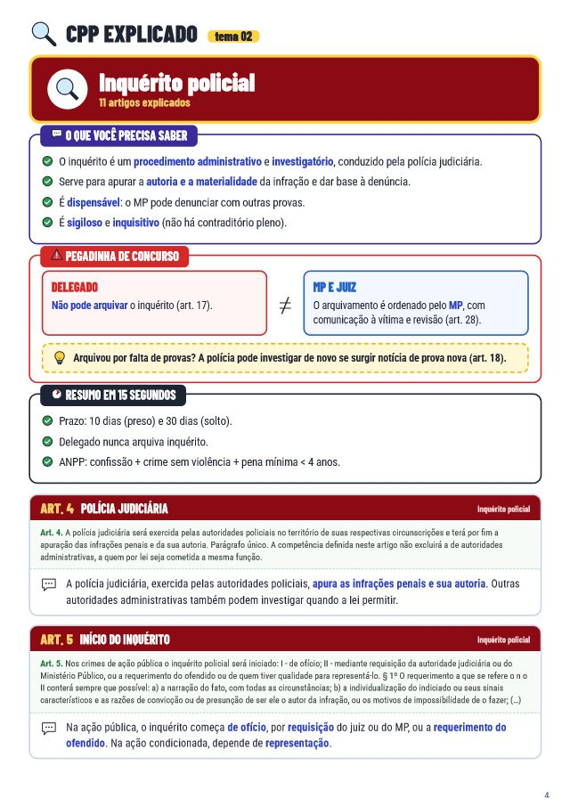
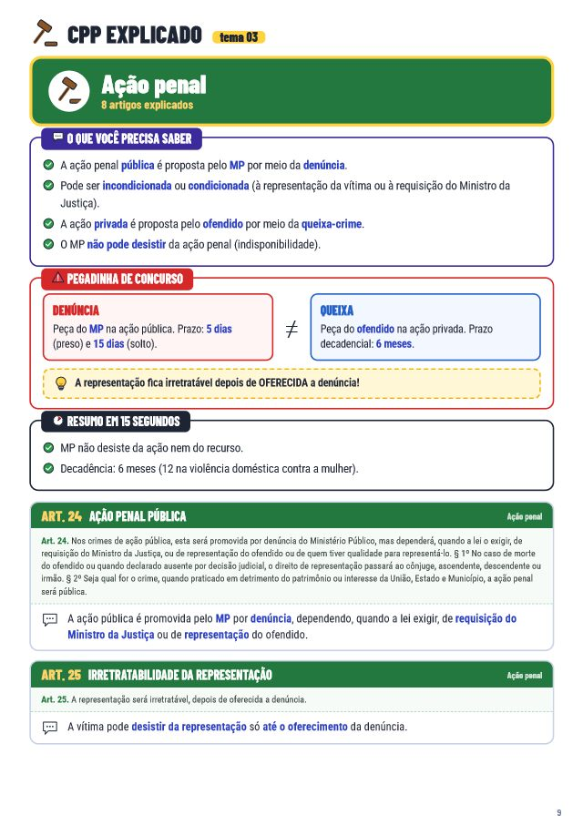
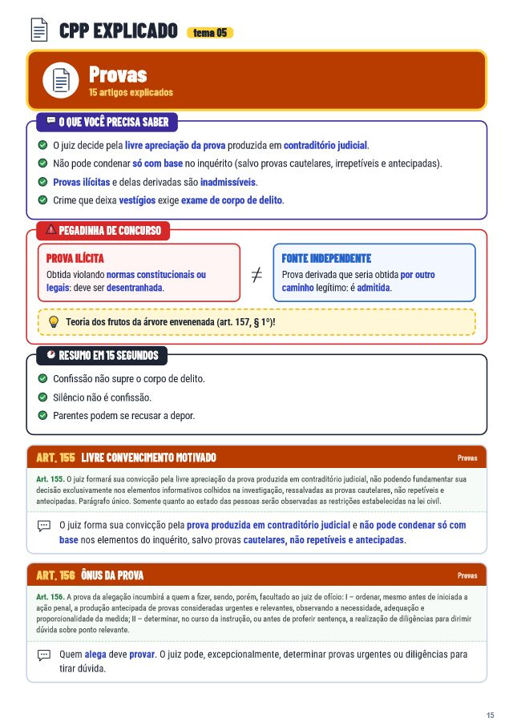
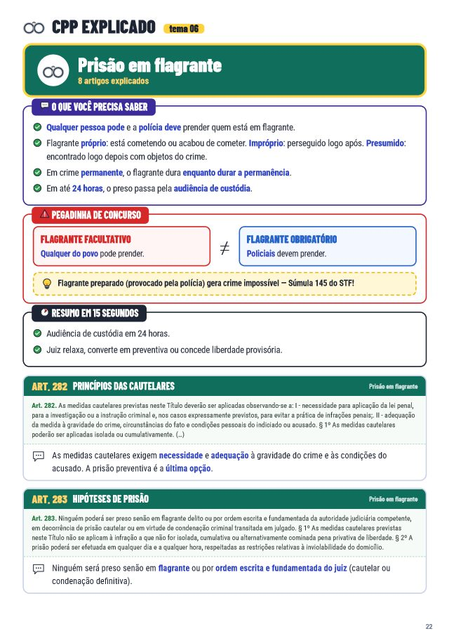
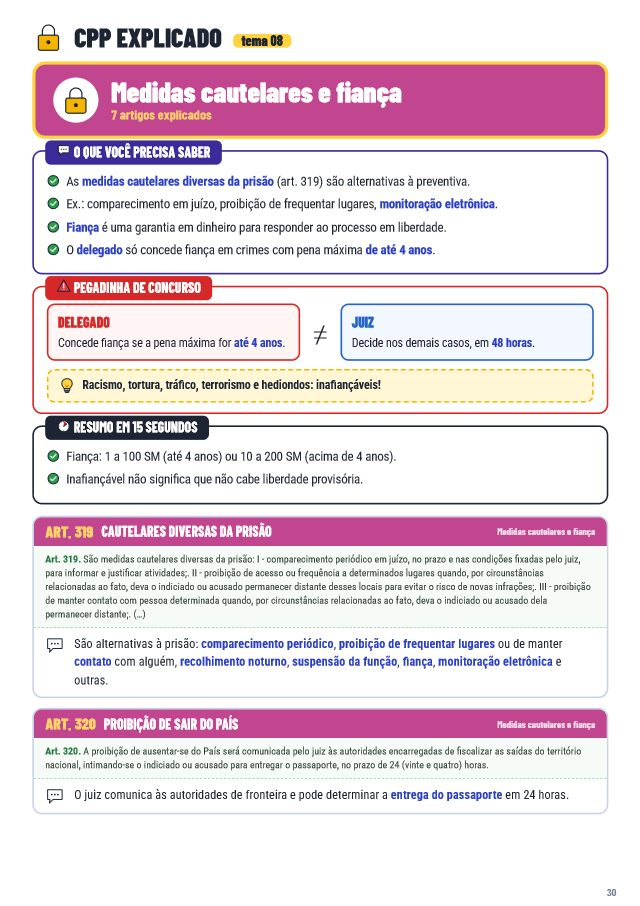
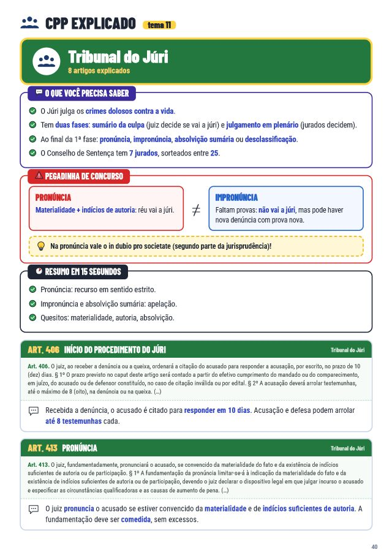
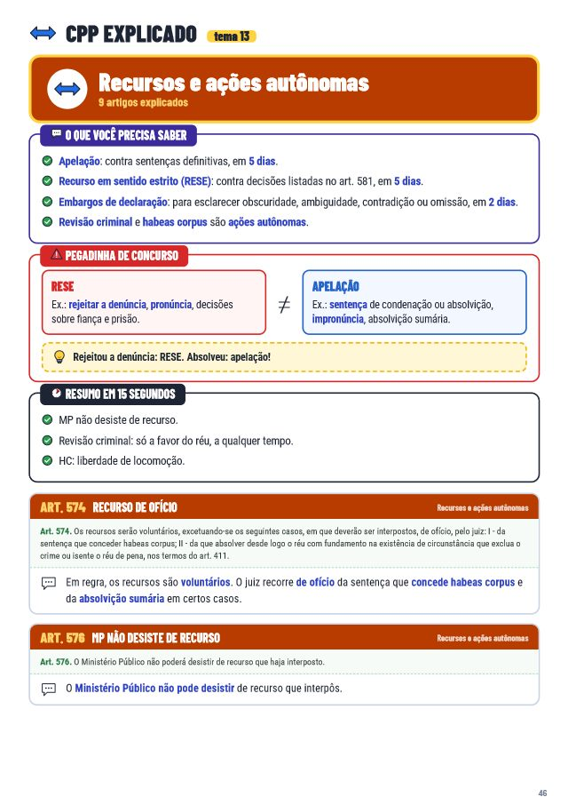

🎉 Parabéns! Seu Código Penal Explicado já é seu.
Você já entendeu os crimes. Agora entenda como funciona o processo.
Inquérito, prisão, fiança e júri, explicados no mesmo formato simples e visual que você acabou de comprar.
O Código Penal diz o que é crime. Mas é o Código de Processo Penal que diz o que acontece depois: quem investiga, quando alguém pode ser preso, quem paga fiança e como o réu é julgado.
E é justamente aí que muita gente trava: o CPP é longo, técnico e cheio de prazos. Por isso ele cai em praticamente todo concurso policial e jurídico, e é onde quem estudou direito ganha pontos.
Veja o material por dentro:







O que você vai entender
- Inquérito policialQuem instaura, prazos, arquivamento e o papel do delegado.
- PrisõesFlagrante, preventiva e temporária: quando cabe cada uma e a diferença entre elas.
- Fiança e liberdade provisóriaQuem pode conceder, valores e os crimes inafiançáveis.
- Tribunal do JúriO passo a passo, do recebimento da denúncia até a votação dos jurados.
- Provas, nulidades e recursosO que vale como prova, o que anula o processo e como recorrer.
- Mesmo formato do Código PenalLinguagem simples, exemplos do dia a dia e destaques visuais em cada artigo.
De R$ 67,00
por apenas
R$ 24,90
Pagamento único · acesso imediato · adicionado ao seu pedido
Sim! Quero o Processo Penal ExplicadoGarantia incondicional de 7 dias. Se não gostar, é só pedir o reembolso dentro de 7 dias e você recebe 100% do valor de volta, sem perguntas.